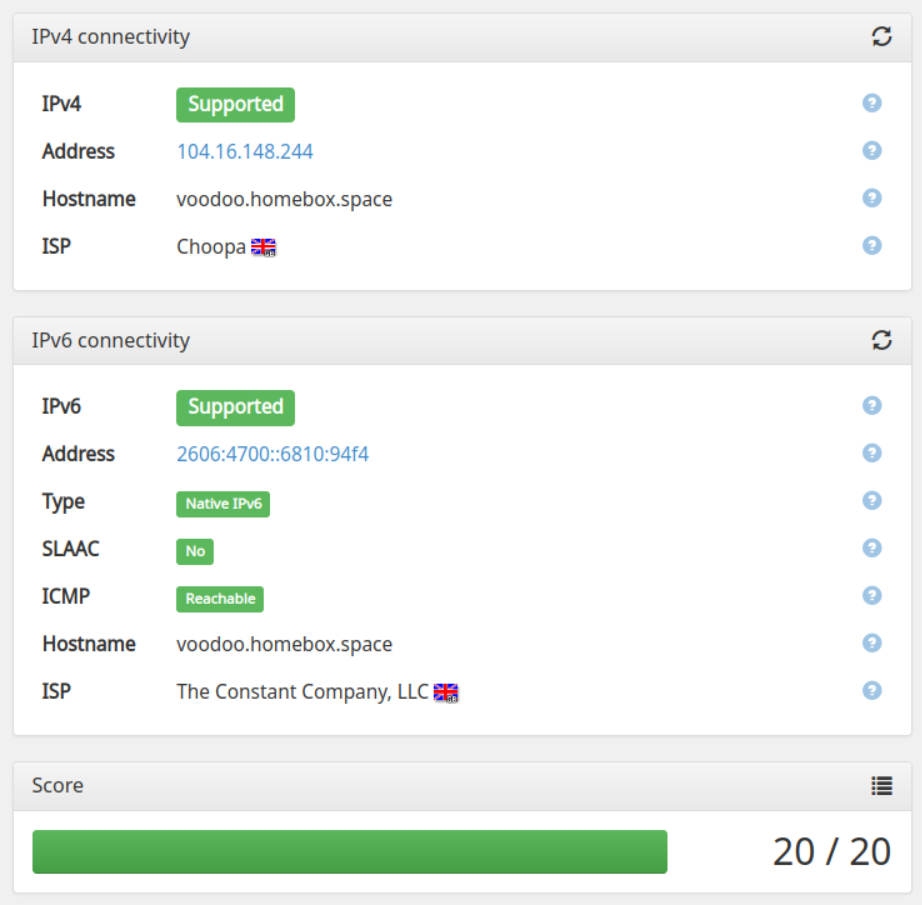

Le serveur VPN peut être configuré pour acheminer tout le trafic du client ou pour restreindre le trafic vers le serveur lui-même. Dans les deux cas, les adresses IPv4 et IPv6 sont entièrement prises en charge.
Également connu sous le nom de « split tunneling », ce mode oblige uniquement le VPN à accéder aux services du serveur, les autres le trafic passe par la passerelle standard du client.
Dans ce mode, tout le trafic passe par le serveur, masquant complètement l’adresse IP du client.
Une fois le VPN installé, vous pouvez configurer certains services systèmes, comme la soumission d’emails (postfix) l’accès IMAP et POP3 (dovecot), Jabber, Grafana, WebDAV, etc... pour être uniquement accessible via le VPN. Si ces services sont sécurisés, les exposer sur internet génère parfois beaucoup de trafic de la part des robots qui essayent diverses attaques, notamment par force brute de mot de passe.
Cela vous protège également si votre serveur est ciblé par des méthodes d’attaques plus avancées, comme une faille « Zero Day » ou une vulnérabilité inconnue.
Lors de l’exécution du playbook, les fichiers de configuration client sont générés dans le dossier archives pour chaque utilisateur et donc accessible via n’importe quel client WebDAV.
Le VPN vous propose également des adresses IP statiques, aussi bien en IPv4 qu’en IPv6, qui peuvent être utiles lorsque vous en avez besoin. Le support d’IPv6 est complet et ne nécessite aucune configuration spécifique, aussi bien sur un ordinateur que sur un téléphone mobile. 